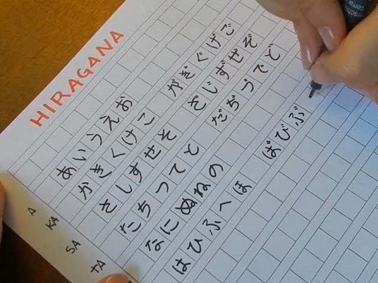

日本
日本Японська мова є однією з найцікавіших та найскладніших мов світу. Японці пишуть ієрогліфами, які запозичили у китайців багато століть тому. Найоб'ємніший словник містить 50 тисяч  ієрогліфів. Але, звичайно, ніхто стільки не знає. Норма для старшокласника - 2 тисячі ієрогліфів. За допомогою них він може легко прочитати книгу чи газету. При цьому в мові існують два алфавіти хіраґана і катакана. Перший використовується для написання японських слів, а другий – для запозичених. Також японська мова складається не з окремих звуків, а зі складів. Тільки "Н" вони вимовляють " чисто", а не складом. В країні не вимовляють букву "Л", в іноземних словах її замінюють на "Р".
Крім того, в японській мові дуже важливе ставлення до ввічливості та поваги. Існують окремі форми дієслів, які використовуються для надання поваги та ввічливості, наприклад, для спілкування зі старшими людьми, вчителями та іншими особами вищого статусу. А також існує багато варіантів мовлення в залежності від ситуації та соціального статусу співрозмовника. Наприклад, існують окремі варіанти мовлення для спілкування з друзями, колегами, незнайомими людьми та іншими.
Ще варто зазначити, що аніме не дуже добре підходить для вивчення японської, тому що там часто використовуються застарілі слова або просто слова які японці не використовують в повсякденному житті. Також висловлювання можуть зазнавати граматичної перебудови.